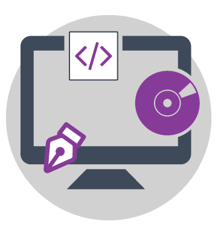

Grupo 30!

Section 1

1. Desarrollo de software a la medida
Ofrecemos servicios de desarrollo de software diseñados especialmente para u negocio y listo para satisfacer sus necesidades exclusivas y hacer sus flujos de trabajo mas eficientes.
2. Desarrollo mobile y web
A través de la estrategia, diseño y tecnologia creamos sitios web elaborados profesionalmetne, aplicaciones nativas moviles y experiencias de marca que atraen millones de consumidores.
3. Servicios de dara science
El qeuipo de Data Science está enfocado en resolver problemas, encontrando patrones ocultos en datos estructurados y no estructurados, usando soluciones de procesamiento de Big Data distribuidos y paralelos.
Section 2
Toyota adopta el software de rFpro
Toyota adopta el software rFpro para su nuevo centro de simulación que proporciona un paso esencial hacia la verificación y los prototipos virtuales, fue elegido por su realismo y visuales líderes en el mercado.
Leer noticia completa >>Ingeniería de Software por ciclos
a ingeniería de Software ha llegado para quedarse. Cada día con más fuerza se posiciona como una de las carreras universitarias más novedosas y de mayor impacto en el mundo.
Leer noticia completa >>Las cinco máximas del desarrollo de software según Baufest
Baufest propone un cambio en la industria del desarrollo de software, para crear soluciones más humanas que conecten con los usuarios.
Leer noticia completa >>Desarrollo de software automatización logística
Market.biz is carefully monitoring developments in the industry in response to the COVID-19 pandemic. Therefore, we have updated the Desarrollo de software de automatización logística...
Leer noticia completa >>Equipo de trabajo
Edwin Gelacio
Desarrollador de software y scrum master
Edgar Hoyos
Ingeniero de procesos y director de area
Alejandro Quintero
Ingenierio de soporte y director de area
Williams Rairan
Ingeniero electrónico y desarrollador de software
Camila Suárez
Ingeniera química de la Universidad de Los Andes